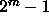
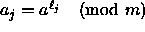

When the modulus m is prime, (usually very close to a power of 2 such as a Mersenne prime,  , so that the operation of taking the modulus will be faster) a method based on using the multiplier, a, as the parameter to generate many sequences has been proposed. We start with a reference value of a and choose the multiplier for the jth stream as  where is the jth integer relatively prime to m-1. This is closely related to the leapfrog method method discussed earlier. Conditions on a and efficient algorithms for computing can be found in a recent work of one of the authors [16].
The scheme given above can be justified based on exponential sums,
which is explained in section  . Two
important open questions remain: (1) is it more efficient overall to
choose m to be amenable to fast modular multiplication or fast
calculation of the jth integer relatively prime to m-1, and (2)
does the good inter-stream correlation also ensure good intra-stream
independence via the spectral test?
. Two
important open questions remain: (1) is it more efficient overall to
choose m to be amenable to fast modular multiplication or fast
calculation of the jth integer relatively prime to m-1, and (2)
does the good inter-stream correlation also ensure good intra-stream
independence via the spectral test?